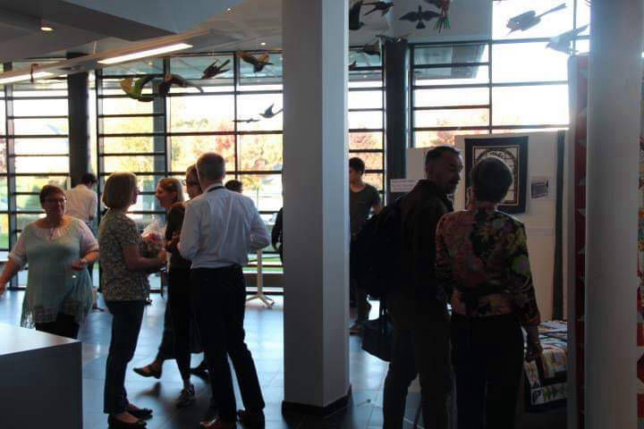

The first art show in the space which has been renamed and rededicated as the Greene Gallery was an exhibition of quilts. These quilts combine love, time, energy, and spirit into creating connection with community.
This was the Quilters’ Community’s first show. There have been communities of quilters since the 12th century which have continued to now. It is an inspirational and wonderful group to be a part of.
Maggie Rose
Mrs. Rose got into quilting because the combination of the visual texture and color leads to so much potential for creation. The pattern becomes like a texture, creating an amazing depth.
Her favorite quilt she made was called Falling Leaves (shown above) because it was like a puzzle to create. Each part of the quilt was a puzzle piece which combined to create a beautiful picture. She loves how the gradient from light in the center to dark on the outside creates a flow which the eyes are drawn through.
Mrs. Frody
Mrs. Frody began quilting after watching her mother, a seamstress, sewing all through her childhood. Mrs. Frody was never allowed to touch the pieces as the clothes were made to sell, but it was her inspiration for beginning to create this type of art. To her, the colors of the fabric are like books.
Her favorite quilt she has made was one created from leftover pieces of fabric from other quilts, but it was not featured in the show.
Mrs. Ferguson
Mrs. Ferguson had a draw to quilting similar to Mrs. Frody’s. Her mother was a dressmaker who used to teach sewing. Mrs. Ferguson was not drawn to sewing herself, however, and instead focused the same type of fabric art on quilting. She loved to look at patchwork in magazines, enjoying the comfort and feel of the quilts. After seeing them in the movies, it was wonderful to realize she could make them, too.
Her favorite quilt is the Amish Quilt which is pictured above.
Claire Hope
Mrs. Hope’s mother always sewed with her when she was little and her mother began to quilt after she retired. Quilting soon became something they could talk about when they were in different countries. To Mrs. Hope, quilting has become a symbol for family.
Her favorite quilts are the ones she gives to her kids. She loves the idea that they will think of her every time they have it around. In that way, she believes there is a feel of inheritance to the quilts.
Mrs. Bruce
Mrs. Bruce first became interested in quilting from reading a book about it and deciding she wanted to try it for herself. What made her continue, though, was that it is not something one does alone, but instead with friends. She loves that she can learn from other people.
The quilts she likes to make are really colorful, BRIGHT colors. To some, she says, they might seem in your face, but Mrs. Bruce likes that.
Her favorite quilt is always the one she is working on at the time.
Mrs. Blackburn
Mrs. Blackburn began quilting after receiving a quilt from her sister. This quilt, however had already been passed down through generations. It originally was made by her sister’s fiance’s grandmother who had recently died. Following his grandmother’s death, he couldn’t bear to see the quilt because it was a reminder of his grief, so Mrs. Blackburn’s sister gifted it to her. This quilt inspired her to begin quilting because it was so beautiful. She began reading books and watching Youtube videos.
She finds it an addictive healthy/unhealthy hobby and she has become a fabric hoarder. She finds that the variety makes it enjoyable since no matter who you are, there are types of quilts for you. Quilts can be traditional, modern, minimalist. There are, “no two quilts the same.” Throughout her life, Mrs. Blackburn experienced “artist envy” as she couldn’t paint or draw, but once she began to quilt, she could express herself through that.
Her favorite quilt is her Gypsy Wife quilt, pictured above.
Theresa Ebbs
Mrs. Ebbs started quilting because she loved the transformation of the fabric. She finds it amazing that the fabric can completely change and transform into a totally different thing. To her, the “fabric guides you to the design”. With every fabric, she thinks about different things she can create.
The quilt she is most proud of is called Falling Stars and is shown above.